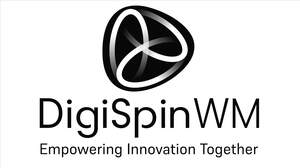

Trade Mark Journal No.2025/036 5 September 2025
UK00004252721 21 August 2025 (35,41,42,45)
Mark 1
Mark 2

- Class 35
- Business consultation services in relation to intellectual property, intellectual property management, business management, product commercialisation and licensing; Business management services in relation to intellectual property, intellectual property management, business management, product commercialisation and licensing; Business analysis and information services, and market research in relation to intellectual property, intellectual property management, business management, product commercialisation and licensing; Providing assistance in the field of product commercialisation; Business networking services; Online business networking services; Commercial administration of the licensing of the goods and services of others; Consultancy and information services relating to the aforesaid.
- Class 41
- Education and training services in relation to intellectual property, intellectual property management, business management, product commercialisation and licensing; Organisation of conferences, exhibitions and competitions relating to intellectual property, intellectual property management, business management, product commercialisation and licensing; Consultancy and information services relating to the aforesaid.
- Class 42
- Hosting of an online portal for accessing information and advice in relation to intellectual property, intellectual property management, business management, product commercialisation and licensing.
- Class 45
- Providing information in the field of intellectual property; Intellectual property consultancy; Consultancy relating to intellectual property management; Intellectual property consultancy services for universities and research institutions; Intellectual property consultancy services for non-profit organisations; Intellectual property consultancy services for inventors; Intellectual property management services; Intellectual property licensing services; Consultancy relating to the licensing of intellectual property; Advisory services relating to intellectual property licensing; Investigations in relation to intellectual property; Intellectual property watching services.
CU Services Limited
Representative: Wilson Gunn